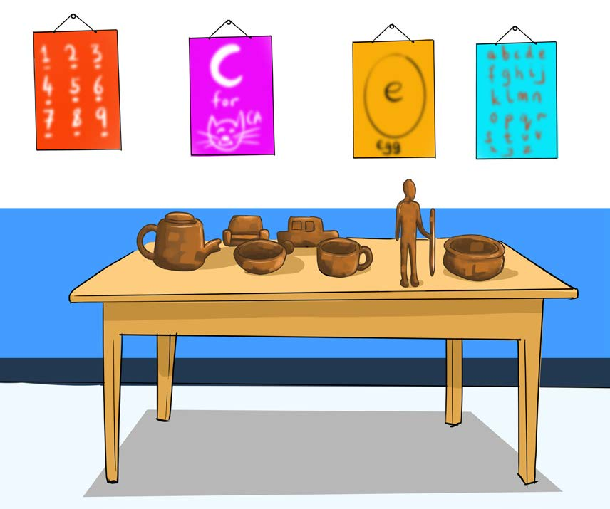

Herufi c.Chagua mchanganyiko wa picha na maumbo ya kufinyanga katika uwiano mzuri.
Swali la sitaTundika au weka kazi za sanaa katika eneo la kuzionesha.
Swali la sabaShiriki katika onesho kwa kuwaelekeza watakao tazama kazi hizo.
Swali la naneMwisho wa onesho kusanya kazi za sanaa na safisha eneo ili libaki safi.
